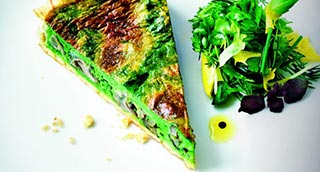

Quiche de brotes de espinacas, setas y foie gras. Coulis de tomate asado.
Espinacas, Setas, Foie

| Pasta quebrada o brisa | 250 gr. |
 |
|
| Espinacas baby | 200 gr. |
| Nata | 200 ml. |
| Leche entera | 200 ml. |
| Huevos | 4 un. |
| Chalota | 1 un. |
| Ajo | 1/2 dt. |
| Nuez moscada | 1 pz |
| Pimienta cayena | 1 pz. |
| Sal | 4 gr. |
|
|
| AOVE | 25 ml. |
| Setas | 250 gr. |
| Foie gras | 100 gr. |
| Garbanzos secos | 250 gr. |
-
Fondo
- Precalentar el horno a 180º.
- Enharinar ligeramente la mesa de trabajo. Estirar la pasta hasta 3 mm. de espesor.
- Con la ayuda de un pincel embadurnar un molde de tarta con mantequilla pomada.
- Colocar encima de un molde de 18 cm. de ø. Presionar hacia el fondo y los laterales. Cortar el excedente de pasta que sobresalga.
- Pinchar con la ayuda de un tenedor el fondo de la tarta. Introducir 30 min. en el frigorífico.
- Colocar un papel de horno o aluminio encima de la pasta. Poner los garbanzos secos e introducir en el horno 18 min. Base
- Sumergir las espinacas 10 seg. en agua hirviendo para blanquearlas, después en agua helada para detener la cocción y fijar el color.
- Escurrirlas y prensarlas entre las manos para extraer el máximo de agua.
- Calentar la leche con la sal y la nuez moscada. Colocar las espinacas, el ajo y la chalota en el vaso del túrmix, añadir la leche caliente y triturar.
- Pasar la mezcla por un colador fino y colocarlo en un bol.
- Por otra parte batir los huevos con un poco de sal, añadir la nata y la pimienta de cayena. Rectificar de sal.
- Juntar las dos mezclas y reservar.
- Cortar el foie gras en cubos de 1 cm. de lado. Repartirlos por el fondo de la Quiche.
- Limpiar los cantarelos y saltearlos con el AOVE, salar y dejar cocer hasta que pierdan toda el agua vegetal. Escurrir y repartir por la Quiche.
- Verte suavemente la crema de espinacas por encima de él foie y las setas. Colocar en el horno y dejar cocer 30 minutos.
- A la salida del horno, desmoldar la Quiche con cuidado.
- Retírar y reservar. Acabado/Presentación
- Desmoldar la Quiche con cuidado de que no se rompa.
- Cortarla en cuatro porciones y servirla caliente.
- Acompañarla con una ensalada de hierbas como en la foto y el coulis de tomate asado.
- Después de cocer la Quiche puede guardar los garbanzos para otra utilización.